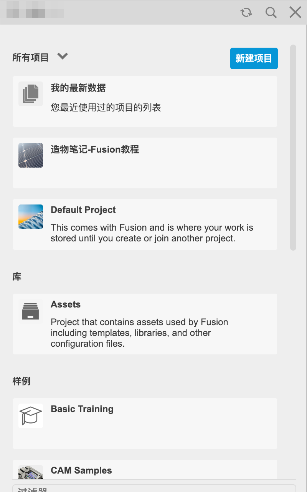
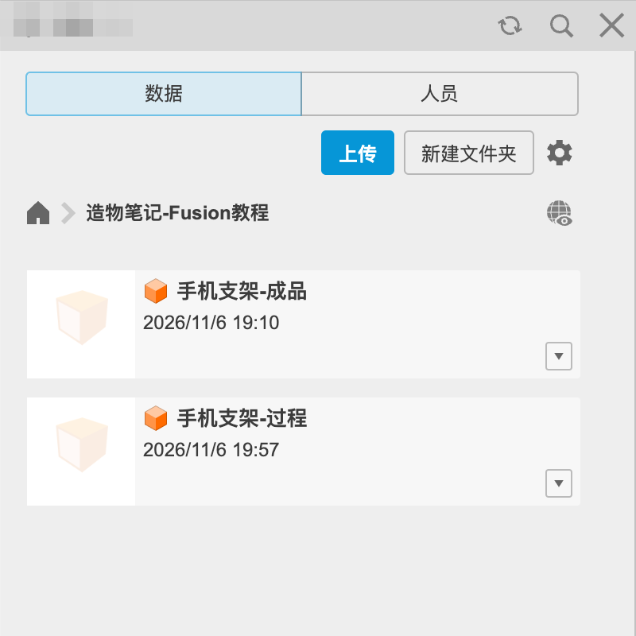
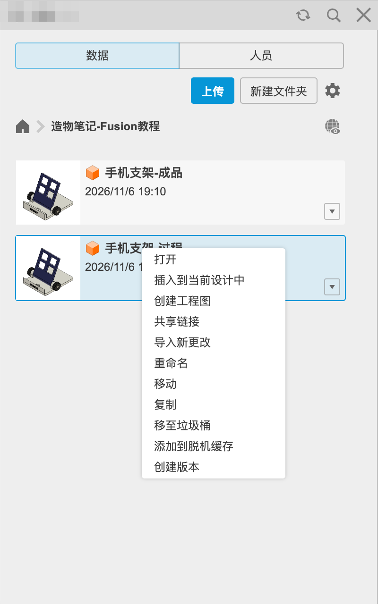
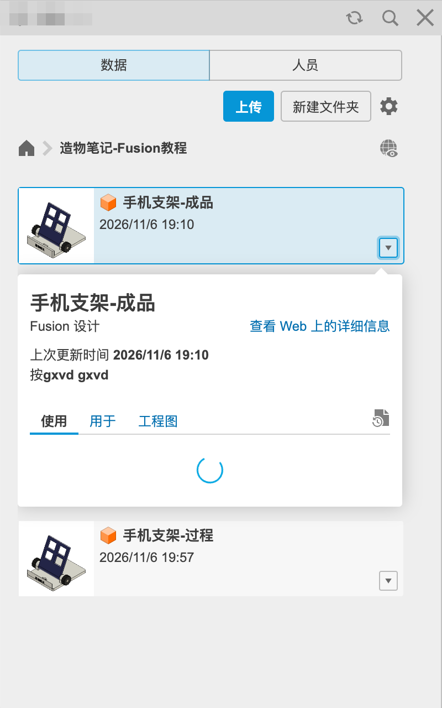
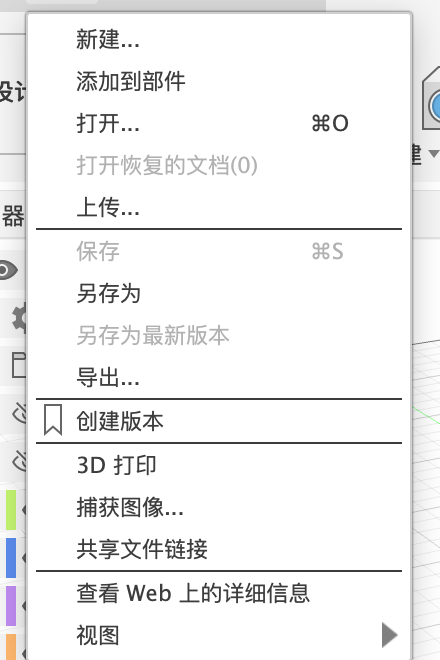

3.3 项目、文件与版本
Fusion 的文件存在云端，按“项目 → 文件夹 → 设计”管理，每次保存自动生成一个版本。这一页讲数据面板的每个按钮、文件右键菜单，以及版本怎么看、怎么退回。
数据面板#
Fusion 的文件默认不在你电脑的某个文件夹里，而是存在 Autodesk 的云端。管理它们的地方叫数据面板：点左上角九宫格图标打开。可以把它理解成云端的“资源管理器”：项目是大文件夹，项目里可以再建文件夹，最里面是一个个设计（文件）。
最上面一层是项目列表：

| 分组 | 是什么 |
|---|---|
| 我的最新数据 | 最近用过的文件，跨项目 |
| 我的可编辑文档 | 可以编辑的设计（个人版有 10 个上限） |
| 项目 | 你创建或加入的项目。「Default Project」是 Fusion 自带的 |
| 库 · Assets | 存放模板、材料库、刀具库等资源的特殊项目 |
| 样例 | Autodesk 提供的示例模型（Basic Training、CAM Samples 等），可以打开学习 |
右上角「新建项目」；双击项目进入：

文件的右键菜单#

| 选项 | 作用 |
|---|---|
| 打开 | 打开设计 |
| 插入到当前设计中 | 把这个设计作为外部零部件插到当前打开的设计里（自底向上装配） |
| 创建工程图 | 直接给它出图纸（第 14 章） |
| 共享链接 | 生成一个网页链接，别人不用装 Fusion 也能在浏览器里看 |
| 导入新更改 | 别的设计被当作零部件插进来以后，原文件又改了，点这个把最新的改动拉过来 |
| 重命名 / 移动 / 复制 | 文件管理 |
| 移至垃圾桶 | 删除（可以在网页版恢复） |
| 添加到脱机缓存 | 下载到本机，没网也能打开 |
| 创建版本 | 手动存一个版本节点 |
版本#
每次保存都会生成一个新版本（v1、v2……）。文件卡片右下角的 ▼ 可以展开详情：

- 在 Fusion 里打开的设计，标题栏旁边会显示版本号（v3 等）。
- 想退回旧版本：右键 →「查看 Web 上的详细信息」，在网页的版本列表里找到旧版本，把它提升为最新版本（具体按钮以网页界面为准）。旧版本不会被删除。
- 「文件 → 另存为最新版本」：把当前打开的旧版本存成最新。
文件菜单#

| 选项 | 作用 |
|---|---|
| 新建… | 新建设计 / 工程图 / 电子设计等 |
| 添加到部件 | 把当前设计作为零部件插进另一个装配（部件 = 多个零件组成的装配） |
| 打开… | 打开云端或本地文件 |
| 打开恢复的文档 | 崩溃后找回自动备份 |
| 上传… | 把电脑上的文件传到当前项目 |
| 保存 / 另存为 / 另存为最新版本 | — |
| 导出… | 导出成别的格式（P10） |
| 创建版本 | 手动生成一个版本节点，可以写说明 |
| 3D 打印 | 直接发送到 3D 打印软件（第 15 章） |
| 捕获图像… | 把当前画布存成图片 |
| 共享文件链接 | 生成浏览链接（3.4） |
| 查看 Web 上的详细信息 | 在浏览器里打开这个文件的网页版 |